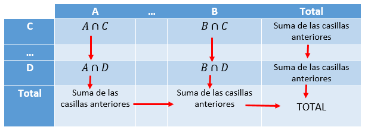
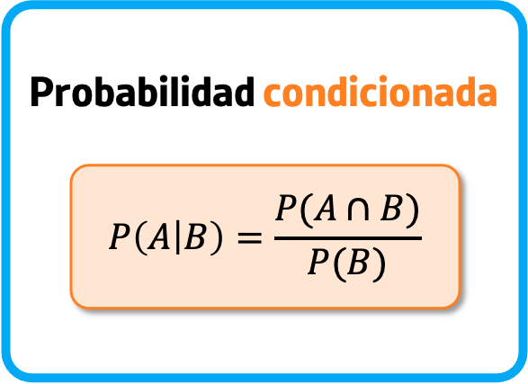
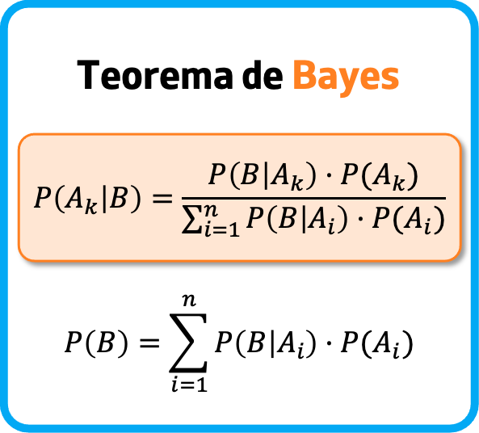

En estadística las tablas de contingencia se emplean para registrar y analizar la asociación entre dos o más variables, habitualmente de naturaleza cualitativa.

La tabla de contingencia generalmente se realiza en datos categóricos, es decir que se pueden dividir en grupos mutuamente excluyentes.
Un ejemplo de datos categóricos es la región de ventas de un producto. Típicamente, la región se puede dividir en categorías como área geográfica (norte, sur, noreste, oeste, etc.) o estado.
Es importante recordar que los datos categóricos no pueden pertenecer a más de una categoría.
TOMADO DE WIKIPEDIA
PROBABILIDAD CONDICIONAL
La probabilidad condicional mide la probabilidad de un resultado determinado (A), en función de la ocurrencia de algún evento anterior (B).
Se dice que dos eventos son independientes si la ocurrencia de uno no afecta la probabilidad de que ocurra el otro. En cambio, si la ocurrencia (o no ocurrencia) de un evento sí afecta la probabilidad de que ocurra el otro, se dice que los dos eventos son dependientes.
Un ejemplo de eventos dependientes es el aumento del precio de las acciones de una empresa después de que la empresa reporta ganancias superiores a las esperadas.
Si los eventos son independientes, entonces la probabilidad de que ocurra el evento B no depende de lo que suceda con el evento A. Por ejemplo, un aumento en las acciones de Apple tiene poca relación con una caída en los precios del trigo.
La probabilidad condicional se escribe a menudo como la "probabilidad de A dado B" y se denota como P(A|B).

TOMADO DE INVESTOPEDIA
TEOREMA DE BAYES
El teorema de Bayes es de enorme relevancia puesto que vincula la probabilidad de A dado B, con la probabilidad de B dado A. Es decir, por ejemplo, que sabiendo la probabilidad de tener un dolor de cabeza dado que se tiene gripe, se podría saber (si se tiene algún dato más), la probabilidad de tener gripe si se tiene un dolor de cabeza. Muestra este sencillo ejemplo la alta relevancia del teorema en cuestión para la ciencia en todas sus ramas, puesto que tiene vinculación íntima con la comprensión de la probabilidad de aspectos causales dados los efectos observados. Una de las muchas aplicaciones del teorema de Bayes es la inferencia bayesiana, un enfoque particular de la inferencia estadística. Cuando se aplican, las probabilidades implicadas en el teorema pueden tener diferentes interpretaciones de probabilidad. Con la interpretación probabilidad bayesiana, el teorema expresa cómo un grado de creencia, expresado como una probabilidad, debería cambiar racionalmente para tener en cuenta la disponibilidad de pruebas relacionadas. La inferencia bayesiana es fundamental para la estadística bayesiana, siendo considerada por una autoridad como; a la teoría de la probabilidad lo que el teorema de Pitágoras es a la geometría.

TOMADO DE WIKIPEDIA
VIDEO
A continuación podran observar un video de una explicación sobre un problema de: